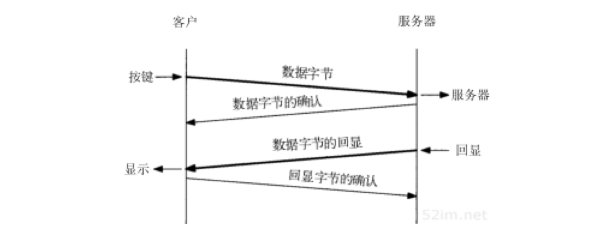
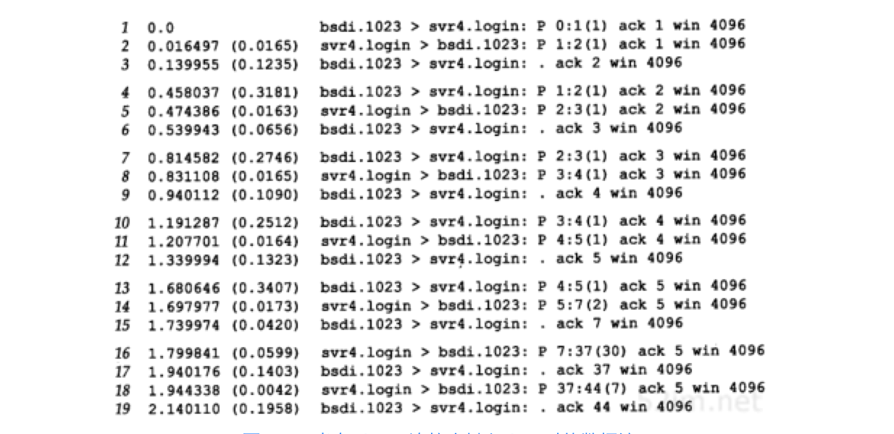
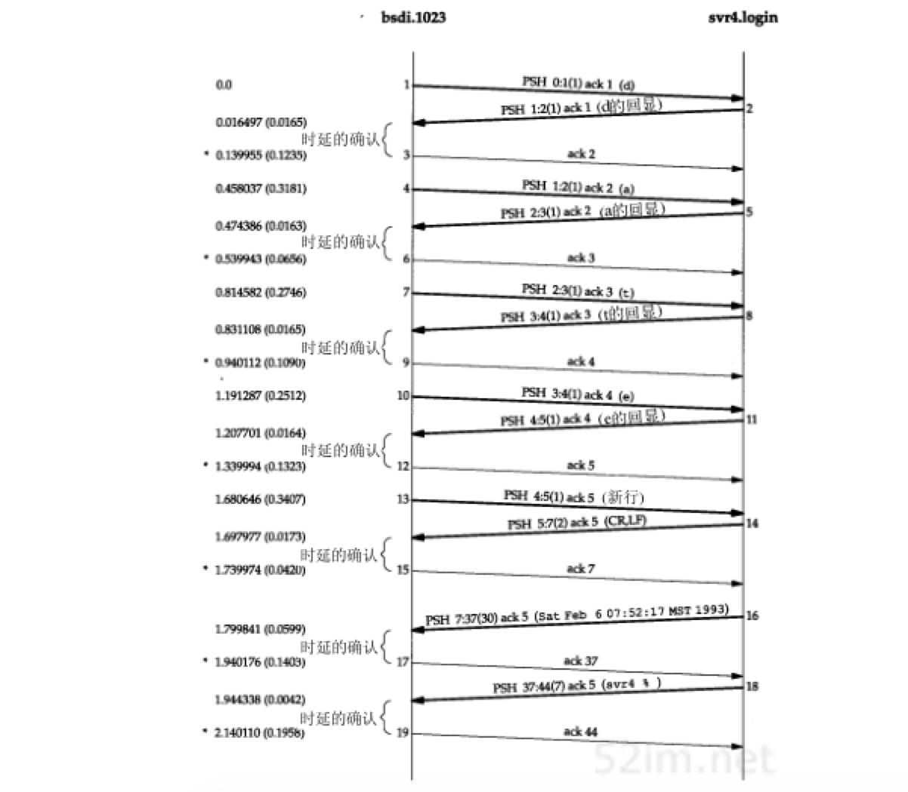
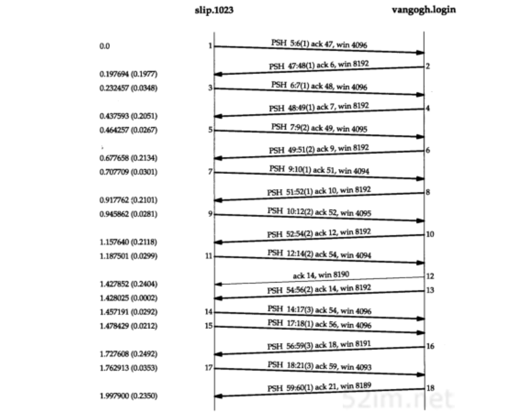
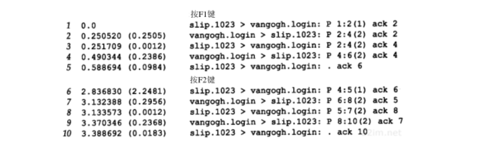
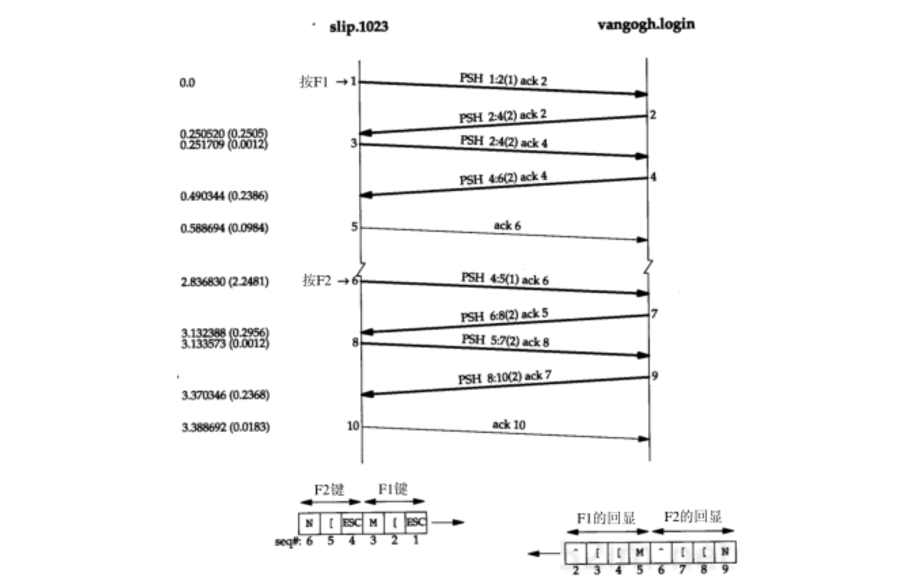
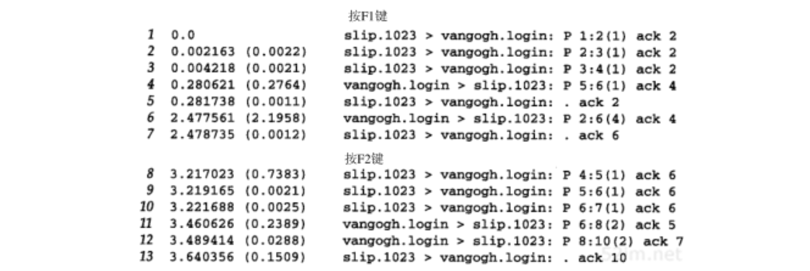
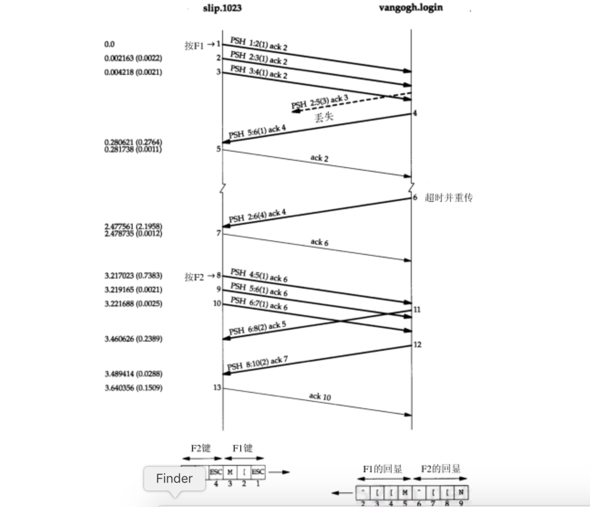

TCP：交互数据流
前一章介绍了TCP连接的建立与释放，现在来介绍使用TCP进行数据传输的有关问题
一些有关TCP通信量的研究发现，如果按照分组数量计算，约有一半的TCP报文段包含成块数据（如FTP、电子邮件和Usenet新闻），另一半则包含交互数据（如telnet和rlogin）。如果按字节计算，则成块数据与交互数据的比例约为90%和10%。这是因为成块数据的报文段基本上都是满长度的（通常为512字节的用户数据），而交互数据则小得多（上述研究表明telnet和rlogin分组中通常约90%左右的用户数据小于10个字节）
很明显，TCP需要同时处理这两类数据，但使用的处理算法则有所不同。本章将以rlogin应用为例来观察交互数据的传输过程。将揭示经受时延的确认是如何工作的以及Nagle算法怎样减少了通过广域网络传输的小分组的数目，这些算法也同样适用于telnet应用。下一章将介绍成块数据的传输问题
交互式输入
首先来观察在一个rlogin连接上键入一个交互命令时所产生的数据流。许多TCP/IP的初学者很吃惊地发现通常每一个交互按键都会产生一个数据分组，也就是说 每次从客户传到服务器的是一个字节的按键（而不是每次一行!） 。而且rlogin需要远程系统（服务器）回显我们（客户）键入的字符。这样就会产生4个报文段：
- 来自客户的交互按键
- 来自服务器的按键确认
- 来自服务器的按键回显
- 来自客户的按键回显确认
图19-1表示了这个数据流：

然而，一般可以将报文段2和3进行合并： 按键确认与按键回显一起发送 。下一节将描述这种合并的技术 经受时延的确认
本章我们特意使用rlogin作为例子，因为它每次总是从客户发送一个字节到服务器。以后讲到telnet的时候，将会发现它有一个选项允许客户发送一行到服务器，通过使用这个选项可以减少网络的负载
图19-2显示的是键入5个字符date\n时的数据流（没有显示连接建立的过程，并且去掉了所有的服务类型输出。BSD/386通过设置一个rlogin连接的TOS来获得最小时延）

- 与字符d有关的
- 第1行：客户发送字符d到服务器
- 第2行：该字符的确认及回显
- 第3行：回显字符的确认
- 第4～6行：与字符a有关的
- 第7～9行：与字符t有关的
- 第10~12行：与字符e有关
第3~4、6~7、9~10和12~13行之间半秒左右的时间差是键入两个字符之间的时延
- 第13~15行：从客户发送到服务器的是一个字符，而回显的则是两个字符
- 客户端发送到服务器的是：按下RETURN键后产生的 UNIX系统中的换行符
- 服务器发送给客户端的是：回车和换行字符( CR/LF )，它们的作用是将光标回移到左边并移动到下一行
- 第16行：来自服务器的date命令的输出
- 这30个字节由28个字符与最后的CR/LF组成
- 第18行：服务器发往客户的7个字符
- 服务器主机上的客户提示符： svr4 %
- 第19行：客户端确认了这7个字符
请注意：TCP是怎样进行确认的
- 第1行以序号0发送数据字节，第2行通过将确认序号设为1，也就是 最后成功收到的字节的序号加1，来对其进行确认 ，也就是所谓的 下一个期望数据的序号
- 第2行中服务器还向客户发送了一序号为1的数据，客户在第3行中通过设置确认序号为2来对该数据进行确认
经受时延的确认
图19-3表示了图19-2中数据交换的时间系列（在该时间系列中，去掉了所有的窗口通告，并增加了一个记号来表明正在传输何种数据）：

把从bsdi发送到srv4的7个ACK标记为 经受时延的ACK 。通常TCP在接收到数据时并不立即发送ACK；相反，它推迟发送，以便将ACK与需要沿该方向发送的数据一起发送（有时称这种现象为数据捎带ACK）。绝大多数实现采用的时延为200ms，也就是说，TCP将以最大200ms的时延等待是否有数据一起发送
如果观察bsdi接收到数据和发送ACK之间的时间差，就会发现它们似乎是随机的：123.5、65.6、109.0、132.2、42.0、140.3和195.8ms。相反，观察到发送ACK的实际时间（从0开始）为：139.9、539.3、940.1、1339.9、1739.9、1940.1和2140.1ms（在图中用星号标出）。这些时间之间的差则是200ms的整数倍，这里所发生的情况是因为 TCP使用了一个200ms的定时器，该定时器以相对于内核引导的200ms固定时间溢出 。由于将要确认的数据是随机到达的（在时刻16.4,474.3,831.1等），TCP在内核的200ms定时器的下一次溢出时得到通知。这有可能是将来1~200ms中的任何一刻
如果观察svr4为产生所收到的每个字符的回显所使用的时间，则这些时间分别为16.5、16.3、16.5、16.4和17.3ms。由于这个时间小于200ms，因此我们在另一端从来没有观察到一个经受时延的ACK。在经受时延的定时器溢出前总是有数据需要发送（如果有一个约为16ms等待时间越过了内核的200ms时钟滴答的边界，则仍可以看到一个经受时延的ACK。在本例中我们一个也没有看到）
在图18-7中，当为检测超时而使用500ms的TCP定时器时，会看到同样的情况。这两个200ms和500ms的定时器都在相对于内核引导的时间处溢出。 不论TCP何时设置一个定时器，该定时器都可能在将来1~200ms和1~500ms的任一处溢出
RFC声明TCP需要实现一个经受时延的ACK，但时延必须小于500ms
Nagle算法
在前一节中,一个Rlogin连接上客户一般每次发送一个字节到服务器，这就产生了一些41字节长的分组：20字节的IP首部、20字节的TCP首部和1个字节的数据。在局域网上，这些小分组（被称为微小分组，通常不会引起麻烦，因为局域网一般不会出现拥塞。但在广域网上，这些小分组则会增加拥塞出现的可能。一种简单和好的方法就是采用RFC 896中所建议的Nagle算法
该算法 要求一个TCP连接上最多只能有一个未被确认的未完成的小分组，在该分组的确认到达之前不能发送其他的小分组 。相反， TCP收集这些少量的分组，并在确认到来时以一个分组的方式发出去
该算法的优越之处在于它是自适应的 确认到达得越快，数据也就发送得越快。而在希望减少微小分组数目的低速广域网上，则会发送更少的分组
在图19-3中可以看到，在以太网上一个字节被发送、确认和回显的平均往返时间约为16ms。为了产生比这个速度更快的数据，我们每秒键入的字符必须多于60个。这表明在局域网环境下两个主机之间发送数据时很少使用这个算法
但是，当往返时间增加时，如通过一个广域网，情况就会发生变化。看一下在主机slip和主机vangogh.cs.berkeley.edu之间的rlogin连接工作的情况。为了从我们的网络中出去，需要使用两个SLIP链路和Internet。我们希望获得更长的往返时间。图19-4显示了当在客户端快速键入字符（像一个快速打字员一样）时一些数据流的时间系列：

- 从slip到vangogh不存在经受时延的ACK。这是因为在时延定时器溢出之前总是有数据等待发送
- 从左到右待发数据的长度是不同的，分别为：1、1、2、1、2、2、3、1和3个字节。这是因为客户只有收到前一个数据的确认后才发送已经收集的数据。通过使用Nagle算法，为发送16个字节的数据客户只需要使用9个报文段，而不再是16个
- 报文段14和15看起来似乎是与Nagle算法相违背的，但我们需要通过检查序号来观察其中的真相。因为确认序号是54，因此报文段14是报文段12中确认的应答。但客户在发送该报文段之前，接收到了来自服务器的报文段13，报文段15中包含了对序号为56的报文段13的确认。因此即使我们看到从客户到服务器有两个连续返回的报文段， 客户也是遵守了Nagle算法的
- 在图中可以看到存在一个经受时延的ACK，但该ACK是从服务器到客户的（报文段12），因为它不包含任何数据，因此我们可以假定这是经受时延的ACK。服务器当时一定非常忙，因此无法在服务器的定时器溢出前及时处理所收到的字符
- 最后两个报文段中数据的数量以及相应的序号。客户发送3个字节的数据（18,19和20），然后服务器确认这3个字节（最后的报文段中的ACK 21），但是只返回了一个字节（标号为59）。这是因为当服务器的TCP一旦正确收到这3个字节的数据，就会返回对该数据的确认，但只有当rlogin服务器发送回显数据时，它才能够发送这些数据的回显。这表明 TCP可以在应用读取并处理数据前发送所接收数据的确认。TCP确认仅仅表明TCP已经正确接收了数据 。最后一个报文段的窗口大小为8189而非8192， 表明服务器进程尚未读取这三个收到的数据
关闭Nagle算法
有时也需要关闭Nagle算法。一个典型的例子是X窗口系统服务器：小消息（鼠标移动）必须无时延地发送，以便为进行某种操作的交互用户提供实时的反馈
这里将举另外一个更容易说明的例子：在一个交互注册过程中键入终端的一个特殊功能键。这个功能键通常可以产生多个字符序列，经常从ASCII码的转义(escape)字符开始。如果TCP每次得到一个字符，它很可能会发送序列中的第一个字符（ASCII码的ESC），然后缓存其他字符并等待对该字符的确认。但当服务器接收到该字符后，它并不发送确认，而是继续等待接收序列中的其他字符。这就会经常触发服务器的经受时延的确认算法，表示剩下的字符没有在200ms内发送。对交互用户而言，这将产生明显的时延
socket API用户可以使用TCP_NODELAY选项来关闭Nagle算法。 RFC声明TCP必须实现Nagle算法，但必须为应用提供一种方法来关闭该算法在某个连接上执行
实例
可以在Nagle算法和产生多个字符的按键之间看到这种交互的情况。在主机slip和主机vangogh.cs.berkeley.edu之间建立一个rlogin连接，然后按下F1功能键，这将产生3个字节：一个escape、一个左括号和一个M。然后再按下F2功能键，这将产生另外3个字节。图19-5表示的是tcpdump的输出结果：

图19-6表示了这个交互过程的时间系列。在该图的下面部分给出了从客户发送到服务器的6个字节和它们的序号以及将要返回的8个字节的回显：

- 报文段1：当rlogin客户读取到输入的第1个字节并向TCP写入时，该字节被发送。这是F1键所产生的3个字节中的第1个
- 报文段2：报文段1发送字节的回显被返回
- 第1个字节的回显为2个字节的原因是因为在ASCII码中转义符的回显是2个字节：
- 插入记号
- 一个左括号
- 第1个字节的回显为2个字节的原因是因为在ASCII码中转义符的回显是2个字节：
- 报文段3：此时剩余的2个字节才被发送
- 报文段4：这两个字节的回显被接收
- 剩下的两个输入字节，分别以自身作为回显内容
- 一个左括号
- 一个M
- 剩下的两个输入字节，分别以自身作为回显内容
- 报文段5：则是对它们的确认
- 报文段6～10：当按下下一个特殊功能键时，也会发生同样的过程
- 正如希望的那样，在报文段5和10（slip发送回显的确认）之间的时间差是200ms的整数倍，因为这两个ACK被进行时延发送
现在我们使用一个修改后关闭了Nagle算法的rlogin版本重复同样的实验。图19-7显示了tcpdump的输出结果：

在已知某些报文段在网络上形成交叉的情况下，以该结果构造时间系列则更具有启发性和指导意义。这个例子同样也需要随着数据流对序号进行仔细的检查。在图19-8中显示这个结果。用图19-7中tcpdump输出的号码对报文段进行了相应的编号：

- 当3个字节准备好时它们全部被发送（报文段1、2和3）。没有时延发生，因为Nagle算法被禁止
- 在tcpdump输出中的下一个分组（报文段4）中带有来自服务器的第5个字节及一个确认序号为4的ACK。这是不正确的，因为客户并不希望接收到第5个字节，因此它立即发送一个确认序号为2而不是6的响应（没有被延迟）。看起来一个报文段丢失了，在图19-8中用虚线表示
- 如何知道这个丢失的报文段中包含第2、3和4个字节，且其确认序号为3呢？这是因为正如在报文段5中声明的那样，我们希望的下一个字节是第2个字节（ 每当TCP接收到一个超出期望序号的失序数据时，它总是发送一个确认序号为其期望序号的确认 ）。也正是因为丢失的分组中包含第2、3和4个字节，表明服务器必定已经接收到报文段2，因此丢失的报文段中的确认序号一定为3（服务器期望接收的下一个字节号）。最后，注意到重传的报文段6中包含有丢失的报文段中的数据和报文段4，这被称为 重新分组化
- 最后可以观察到键入的下一个特殊功能键所产生的3个字节分别作为单独的报文段（报文段8、9和10）被发送。这一次服务器首先回显了报文段8中的字节（报文段11），然后回显了报文段9和10中的字节（报文段12）
在这个例子中，能够观察到的是在跨广域网运行一个交互应用的环境下，当进行多字节的按键输入时，默认使用Nagle算法会引起额外的时延
窗口大小通告
在图19-4中，可以观察到slip通告窗口大小为4096字节，而vangogh通告其窗口大小为8192个字节。该图中的大多数报文段都包含这两个值中的一个
然而，报文段5通告的窗口大小为4095个字节，这意味着在TCP的缓冲区中仍然有一个字节等待应用程序（rlogin客户）读取。同样，来自客户的下一个报文段声明其窗口大小为4094个字节，这说明仍有两个字节等待读取
服务器通常通告窗口大小为8192个字节，这是因为 服务器在读取并回显接收到的数据之前，其TCP没有数据发送。当服务器已经读取了来自客户的输入后，来自服务器的数据将被发送
然而， 在ACK到来时，客户的TCP总是有数据需要发送。这是因为它在等待ACK的过程中缓存接收到的字符。当客户TCP发送缓存的数据时，rlogin客户没有机会读取来自服务器的数据，因此，客户通告的窗口大小总是小于4096